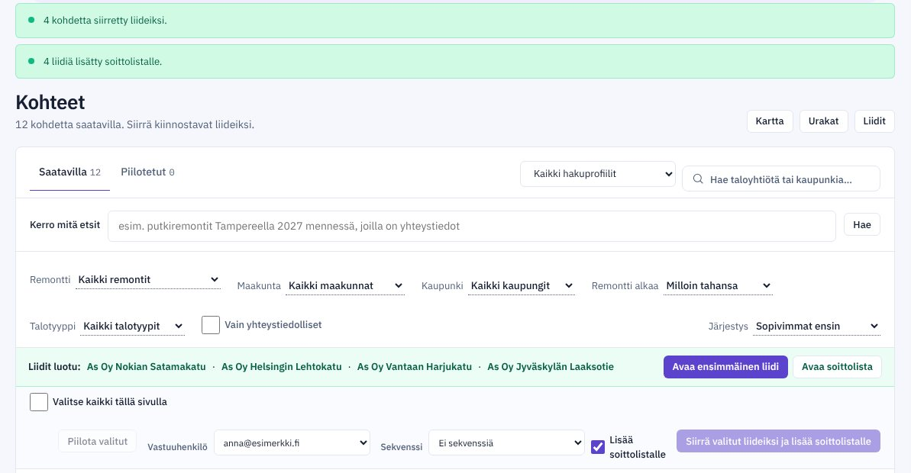
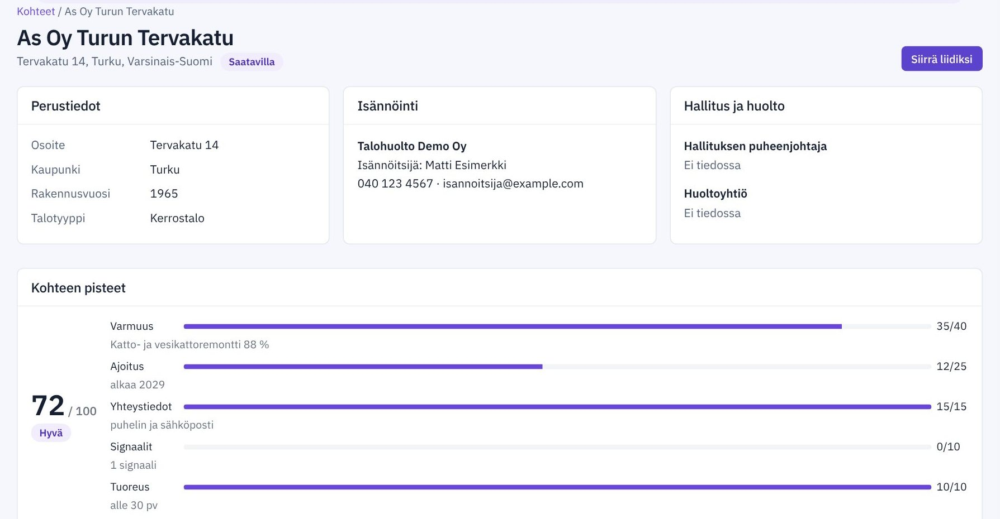
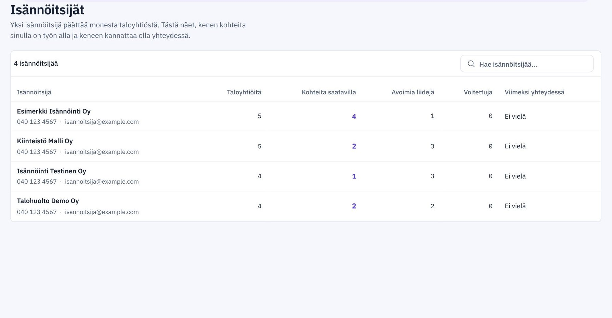
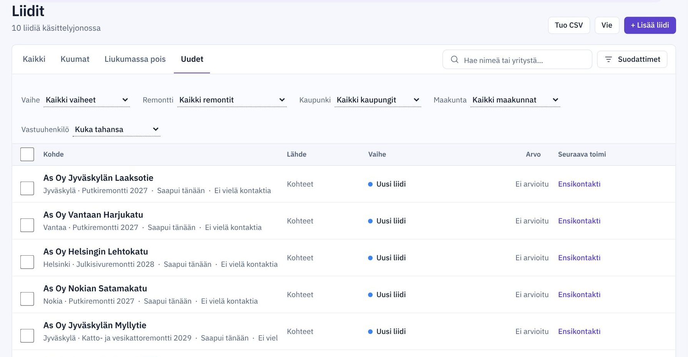
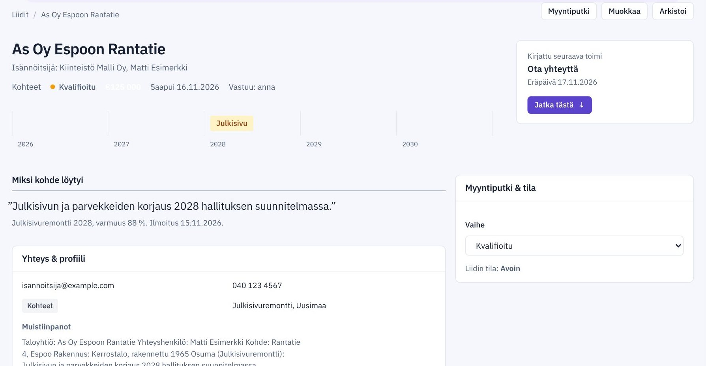
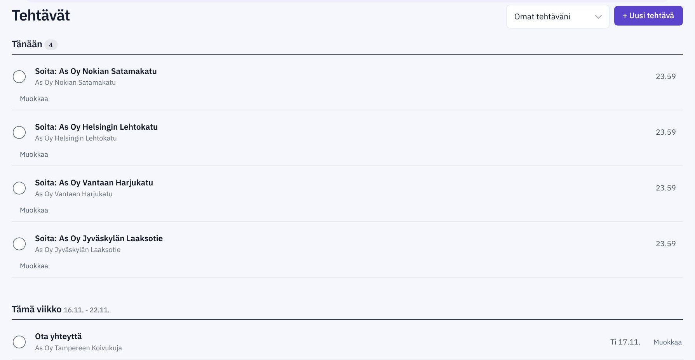
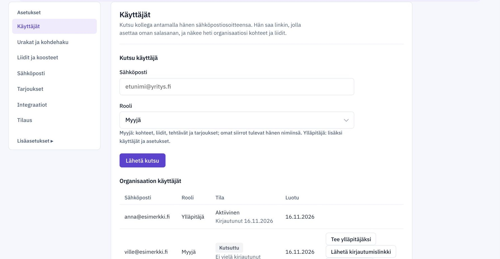
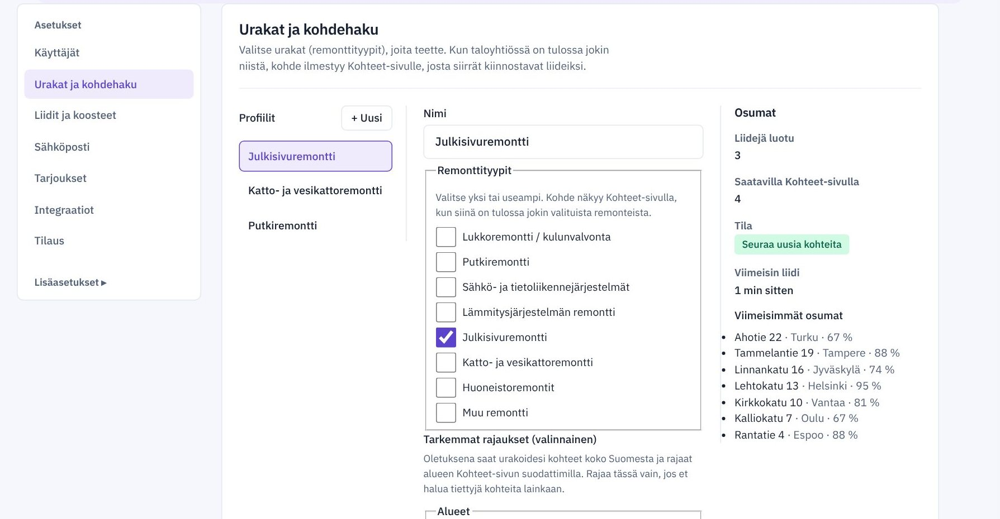
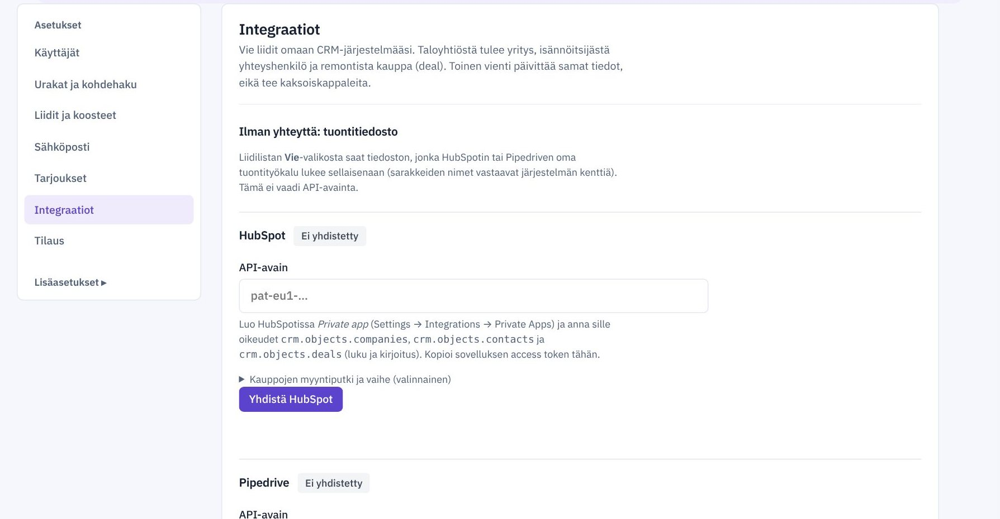
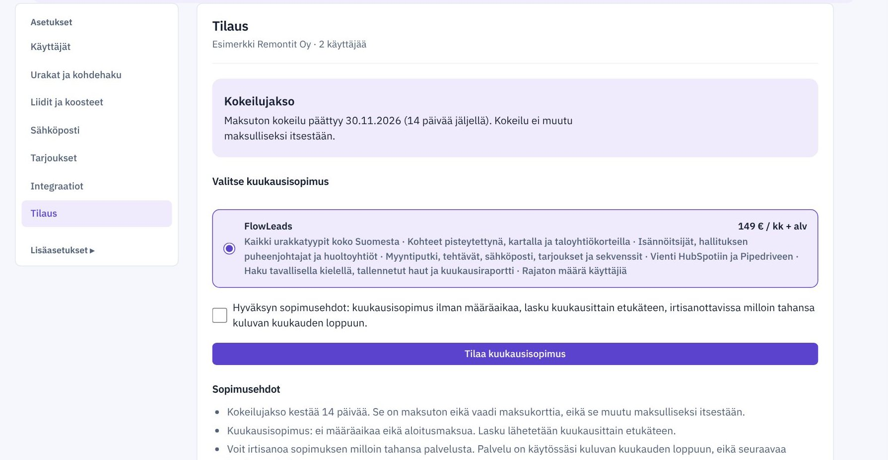

Ohjeen kuvakaappaukset on otettu esimerkkiorganisaatiosta. Kaikki niissä näkyvät taloyhtiöt, henkilöt ja yhteystiedot ovat kuvitteellisia.
Luku 1
Aloitus ja kirjautuminen
FlowLeads etsii taloyhtiöt, joissa sinun urakkasi on tulossa, pisteyttää ne ja kokoaa päättäjien yhteystiedot. Samassa työkalussa hoidat yhteydenotot tarjoukseen asti.
Käyttöönotto kutsulinkillä
Organisaation ensimmäinen käyttäjä saa Flowlylta sähköpostiin kutsulinkin. Linkki on voimassa 7 päivää.
Avaa linkki. Sivulla lukee Tervetuloa ja organisaatiosi nimi.
Kirjoita salasana (vähintään 12 merkkiä) kahteen kertaan.
Paina Viimeistele käyttöönotto.
Samalla organisaatiollesi luodaan valmis hakuprofiili koko Suomesta, valmis sähköpostisekvenssi ja 14 päivän maksuton kokeilu. Ensimmäiset kohteet voi hakea noin 10 minuutin kuluttua Hae kohteita -painikkeella.
Jos linkki on vanhentunut tai jo käytetty, sivulla lukee Kutsu ei kelpaa. Pyydä silloin uusi kutsu Flowlylta.
Kirjautuminen
Kirjaudu sähköpostiosoitteella ja salasanalla ja paina Kirjaudu sisään.
Jos salasana on unohtunut, valitse Unohditko salasanan?, kirjoita sähköpostiosoitteesi ja paina Lähetä linkki. Sähköpostiin tulevasta linkistä pääset asettamaan uuden salasanan.
Kaksivaiheinen tunnistautuminen
Ylläpitäjän tunnukset suojataan aina kaksivaiheisella tunnistautumisella. Myyjälle se on vapaaehtoinen.
Asenna puhelimeen todennussovellus, esimerkiksi Google Authenticator, Microsoft Authenticator tai 1Password.
Skannaa sovelluksella näytöllä näkyvä QR-koodi.
Kirjoita sovelluksen näyttämä kuusinumeroinen koodi kenttään Vahvistuskoodi ja paina Vahvista ja ota käyttöön.
Tallenna varakoodit turvalliseen paikkaan. Ne näytetään vain kerran.
Jatkossa kirjautuminen kysyy salasanan jälkeen sovelluksen koodin. Jos puhelin on hukassa, voit kirjautua varakoodilla. Ylläpitäjä voi myös nollata käyttäjän tunnistautumisen kohdassa Asetukset → Käyttäjät.
Roolit
Rooli
Mitä rooli voi tehdä
Myyjä
Käyttää kohteita, liidejä, tehtäviä, soittolistaa ja tarjouksia. Myyjän siirtämät kohteet tulevat hänen omiksi liideikseen.
Ylläpitäjä
Kaikki myyjän toiminnot, ja lisäksi käyttäjät, urakat ja kohdehaku, koosteet, sähköpostiasetukset, integraatiot ja tilaus. Ylläpitäjä voi valita siirron yhteydessä liidille vastuuhenkilön ja arkistoida liidejä.
Luku 2
Kojelauta ja liikkuminen
Kojelauta näyttää yhdellä silmäyksellä, mitä tänään kannattaa tehdä.
Kojelauta. Ylhäällä on päivän tärkein liidi, alla tämän päivän soitot ja uudet kohteet.
Valikko
Myynti
Kojelauta: päivän näkymä
Kohteet: uudet taloyhtiöt. Luku kertoo saatavilla olevat kohteet.
Liidit ja Myyntiputki
Isännöitsijät
Toiminta ja hallinta
Tehtävät, Soittolista ja Kalenteri
Tarjoukset
Sekvenssit ja Automaatiot, jos ne ovat käytössä
Raportit ja Asetukset
Kojelaudan osat
Tänään: montako puhelua on soittolistalla ja montako kohdetta on saatavilla.
Tumma nostokortti: liidi, joka kannattaa hoitaa ensin. Avaa liidi vie suoraan liidin sivulle.
Odottaa käsittelyä: myöhässä olevat tehtävät ja avoimet tarjoukset.
Soitot tänään, Uudet kohteet, Uudet liidit ja Seurattavat kohteet.
Tunnusluvut: uudet liidit 7 päivän ajalta, avoimen putken arvo, päivän tehtävät ja todennäköiset kaupat.
Pikahaku
Paina Ctrl + K (Macilla Cmd + K) missä tahansa. Haulla löydät liidit, tehtävät ja komennot.
Ilmoitukset löytyvät valikon alaosasta kohdasta Ilmoitukset. Sinne tulevat esimerkiksi uudet kohteet, tallennettujen hakujen osumat ja hyväksytyt tarjoukset.
Luku 3
Kohteet
Kohde on yksi taloyhtiö, jossa on tulossa sinun urakkaasi sopiva remontti. Kohteet eivät muutu liideiksi itsestään. Sinä päätät, mitkä siirrät myyntiin ja mitkä piilotat.
Kohteet-sivu. Ylhäällä haku ja suodattimet, alla kohteet sopivimmasta alkaen.
Hae kohteita
Uudet kohteet tulevat näkyviin Hae kohteita -painikkeella.
Painiketta voi käyttää kerran tunnissa organisaatiota kohden. Odotusaikana painikkeessa näkyy, milloin seuraava haku onnistuu.
Haku kestää 10–15 sekuntia. Älä sulje sivua sen aikana.
Kerralla löytyy muutama uusi kohde. Uudet kohteet on merkitty listalla tunnuksella uusi.
Suodattimet ja järjestys
Rajaukset tulevat voimaan heti. Valikoissa näkyvät vain ne arvot, joita kohteissa oikeasti on.
Suodatin
Käyttö
Remontti
Remonttityyppi, esimerkiksi putki-, julkisivu- tai kattoremontti
Maakunta, Kaupunki
Alueen rajaus
Remontti alkaa
Näytä vain remontit, jotka alkavat viimeistään valittuna vuonna
Talotyyppi
Kerrostalo, rivitalo ja niin edelleen
Vain yhteystiedolliset
Piilottaa kohteet, joihin ei vielä ole yhteystietoja
Järjestys
Sopivimmat ensin (oletus), Uusimmat ensin, Vanhimmat ensin, Varmimmat ensin, Kaupungin mukaan, Remontti alkaa ensin
Jos kohteesta puuttuu tieto, esimerkiksi rakennusvuosi tai talotyyppi, se ei koskaan putoa rajauksen ulkopuolelle. Tyhjennä rajaukset palauttaa koko listan.
Haku tavallisella kielellä
Kirjoita kenttään Kerro mitä etsit esimerkiksi ”putkiremontit Tampereella 2027 mennessä, joilla on yhteystiedot” ja paina Hae. FlowLeads asettaa suodattimet puolestasi ja näyttää, miten se tulkitsi haun.
Tallennetut haut
Kun rajaus on kohdallaan, anna sille nimi ja paina Tallenna haku. Saat ilmoituksen, kun haulle löytyy uusia kohteita. Ilmoitukset voi kytkeä haun kohdalta päälle tai pois. Jokaisella käyttäjällä voi olla enintään 15 tallennettua hakua.
Sopivuus
Jokainen kohde saa pisteet 0–100. Klikkaamalla pisteitä näet, mistä ne muodostuvat.
Osa
Enintään
Mitä se mittaa
Varmuus
40
Kuinka varmasti remontti on tulossa
Ajoitus
25
Kuinka pian remontti alkaa
Yhteystiedot
15
Löytyykö päättäjän puhelin ja sähköposti
Signaalit
10
Kuinka moni erillinen lähde viittaa remonttiin
Tuoreus
10
Kuinka tuore uusin tieto on
Pisteet oppivat valinnoistasi. Kohteet, joita organisaatiosi siirtää liideiksi, nostavat samankaltaisia kohteita ylemmäs. Piilotetut kohteet laskevat samankaltaisia alemmas. Pisteiden selitteet ovat Erinomainen (75 tai enemmän), Hyvä (55–74), Kohtalainen (35–54) ja Heikko (alle 35).
Avaa kohteen rivi nuolesta, niin näet remonttien ajoituksen ja varmuuden, isännöitsijän yhteystiedot, hallituksen puheenjohtajan ja huoltoyhtiön sekä perustelun sille, miksi kohde sopii sinulle.
Siirrä liideiksi
Valitse kohteet rivien valintaruuduista tai kohdasta Valitse kaikki tällä sivulla.
Valitse halutessasi Vastuuhenkilö (vain ylläpitäjä) ja Sekvenssi, joka lähettää uusille liideille sähköpostisarjan.
Rastita Lisää soittolistalle, jos haluat soittaa liideille.
Paina Siirrä valitut liideiksi. Painikkeen teksti kertoo, mitä kaikkea siirto tekee.

Siirron jälkeen näet luodut liidit ja pääset avaamaan ensimmäisen liidin tai soittolistan.
Huomaa
Liidi, jolla ei ole sähköpostiosoitetta, ei mene sekvenssiin. Liidi, jolla ei ole puhelinnumeroa, ei mene soittolistalle. Sivu kertoo tämän jo ennen siirtoa.
Saman taloyhtiön uusi ilmoitus liitetään olemassa olevaan liidiin. Samasta taloyhtiöstä ei synny kahta liidiä.
Piilota kohde
Piilota siirtää kohteen välilehdelle Piilotetut. Sieltä sen saa takaisin painikkeella Palauta, tai sen voi siirtää suoraan liidiksi.
Ylläpitäjä voi kytkeä Kohteet-sivulta päälle päiväkoosteen. Kooste tulee joka aamu klo 7.30 ilmoituksena ja sähköpostina, kun uusia kohteita on tullut.
Luku 4
Taloyhtiökortti, kartta ja isännöitsijät
Kun haluat tietää yhdestä taloyhtiöstä kaiken, avaa sen taloyhtiökortti.
Taloyhtiökortti
Kortti aukeaa, kun klikkaat taloyhtiön nimeä Kohteet-sivulla, kojelaudalla, isännöitsijän sivulla tai liidillä.

Taloyhtiökortti: perustiedot, isännöinti, hallitus ja huolto sekä kohteen pisteet eriteltyinä.
Perustiedot, Isännöinti sekä Hallitus ja huolto
Kohteen pisteet osa kerrallaan
Tulevat remontit ja Signaalit aikajanalla: kaikki tieto, joka remonttiin viittaa, aikajärjestyksessä
Myynnin tilanne sekä painike Siirrä liidiksi tai Avaa liidi
Tietosuoja
Hallituksen puheenjohtajan yhteystietoja saa käyttää vain tätä remonttia koskevaan yhteydenottoon.
Kartta
Kohteet-sivun Kartta näyttää kohteet kartalla samoilla rajauksilla kuin lista. Pisteen väri kertoo sopivuuden. Kartta auttaa hoitamaan saman alueen yhtiöt samalla kertaa. Sijainti on likimääräinen.
Isännöitsijät
Isännöitsijät-sivu kokoaa isännöitsijät, jotka hoitavat organisaatiollesi sopivia taloyhtiöitä. Näet heti, kenellä on eniten sopivia kohteita, avoimia liidejä ja voitettuja kauppoja ja milloin hänen kanssaan on viimeksi oltu yhteydessä.

Isännöitsijät. Yksi hyvä suhde isännöitsijään voi avata useita taloyhtiöitä.
Luku 5
Liidit ja myyntiputki
Liidi on yksi taloyhtiön remontti, jota myyt. Taloyhtiön nimi on liidin yrityksenä ja isännöitsijä yhteyshenkilönä.
Liidilista

Liidit-sivu. Välilehdet Kaikki, Kuumat, Liukumassa pois ja Uudet.
Kuumat ovat liidejä, joiden pisteet ovat vähintään 70. Liukumassa pois ovat liidejä, joihin ei ole oltu yhteydessä yli 7 päivään.
Rajaa listaa haulla sekä valikoilla Vaihe ja Vastuuhenkilö. Lisää rajauksia löytyy painikkeesta Suodattimet.
Kun valitset useita liidejä, voit vaihtaa niiden vaiheen, määrittää vastuuhenkilön tai viedä ne kerralla (Toiminto → Toteuta).
Rivin klikkaus avaa liidin sivupaneeliin. Avaa liidi avaa koko sivun.
Liidin sivu

Liidin sivu: miksi kohde löytyi, yhteystiedot, vaihe ja työtila.
Jatka tästä ehdottaa seuraavaa tekoa.
Miksi kohde löytyi näyttää lauseen, josta remontti tunnistettiin.
Lähetä sähköposti, Soita, sekä nopeat kirjaukset Kirjaa soitto ja Kirjaa sähköposti lyhyen muistiinpanon kanssa.
Työtilan välilehdet: Aktiviteetti, Tehtävät, Sähköposti, Sekvenssit, Tapaamiset, Tarjoukset ja Tietosuoja.
Myyntiputki & tila: vaihda vaihetta valikosta. Kun merkitset liidin hävityksi, valitse syy. Syyt näkyvät raporteissa.
Myyntiputki
Myyntiputki näyttää liidit vaiheittain. Siirrä korttia vetämällä se toiseen vaiheeseen. Vaiheet ovat Uusi liidi, Kontaktoitu, Kvalifioitu, Tarjous lähetetty, Voitettu ja Hävitty.
Myyntiputki. Sarakkeen yläosassa näkyy liidien määrä ja yhteenlaskettu arvo.
Tuonti ja vienti
Tuo CSV: tuo omat liidisi tiedostosta. Lataa ensin mallitiedosto. Yhdellä kertaa voi tuoda enintään 2000 riviä. Rivi ohitetaan, jos samalla sähköpostilla ja yrityksellä on jo liidi.
Vie: CSV (Excel), HubSpot-tuontitiedosto tai Pipedrive-tuontitiedosto. Suoraa yhteyttä HubSpotiin ja Pipedriveen käsitellään luvussa 10.
Luku 6
Soittolista ja tehtävät
Soittolistalla ovat päivän puhelut järjestyksessä. Jokaisen puhelun lopputuloksen kirjaat yhdellä painalluksella.
Soittolista. Jokaisella kortilla on puhelinnumero, remontti ja lopputulospainikkeet.
Näin soittolista toimii
Liidit tulevat listalle, kun rastitat siirrossa Lisää soittolistalle. Uuden liidin automaattisesta tehtävästä ”Ota yhteyttä” tulee silloin puhelu.
Valitse lopputulos. Se kirjataan liidille soittona, ja lista siirtyy seuraavaan.
Lopputulos
Mitä tapahtuu
Ei vastannut
Puhelu siirtyy seuraavaan aamuun klo 9.00.
Pyysi tarjouksen
Puhelu on tehty, ja seuraavalle aamulle syntyy tehtävä ”Tee tarjous”.
Tapaaminen sovittu
Puhelu on tehty.
Ei kiinnostunut
Puhelu on tehty.
Ylläpitäjä voi vaihtaa näkymää omien ja koko tiimin puheluiden välillä.
Tehtävät
Tehtävät-sivulla tehtävät on ryhmitelty: Myöhässä, Tänään, Tämä viikko ja Myöhemmin. Uuden tehtävän luot painikkeella + Uusi tehtävä tai liidin sivun Tehtävät-välilehdeltä. Tehtävällä on tyyppi (Soitto, Sähköposti, Seuranta, Tapaaminen, Muu), prioriteetti, eräpäivä ja tarvittaessa muistutus. Ajat ovat Suomen aikaa.

Tehtävät. Valikosta voi vaihtaa omien ja koko tiimin tehtävien välillä.
Kalenterissa näet sovitut tapaamiset päivä- tai viikkonäkymänä. Tapaamisen voi sopia liidin sivun Tapaamiset-välilehdeltä.
Luku 7
Sähköposti ja sekvenssit
Lähetä yksittäinen viesti liidin sivulta, tai anna sekvenssin lähettää sovittu viestisarja puolestasi.
Yksittäinen sähköposti
Avaa liidi ja paina Lähetä sähköposti. Painike ei ole käytössä, jos liidillä ei ole sähköpostiosoitetta.
Valitse halutessasi valmis Malli, kirjoita aihe ja viesti ja tarkista Esikatselu.
Paina Lähetä sähköposti. Lähetetyt viestit näkyvät kohdassa Sähköpostihistoria.
Sekvenssit
Sekvenssi on viestisarja, joka lähtee liidille sovituin väliajoin. Organisaatiollasi on valmiina sekvenssi ”Taloyhtiöt: isännöitsijän lähestyminen”:
Viesti
Milloin
Aihe
1
Heti
{{company}}: tuleva remontti
2
4 päivää myöhemmin
{{company}}: referenssit hallitukselle
3
6 päivää myöhemmin
{{company}}: palataanko asiaan myöhemmin?
Viestit 2 ja 3 jätetään lähettämättä, jos liidi on jo vastannut.
Ennen ensimmäistä käyttöä
Muokkaa viestit omiksesi: kerro yrityksestäsi, referensseistäsi ja yhteystiedoistasi. Avaa Sekvenssit, valitse sekvenssi ja muokkaa vaiheita.
Sekvenssin muokkaus. Vasemmalla vaiheet, oikealla esikatselu testiliidillä.
Muuttujat
Viesteihin voi lisätä muuttujia, jotka täyttyvät liidin tiedoilla. Esimerkiksi {{company}} on taloyhtiön nimi, {{remonttityyppi}} remontti, {{ajankohta}} remontin ajankohta, {{kaupunki}} kaupunki ja {{isannoitsija}} isännöitsijä. Lisäksi käytössä ovat {{first_name}}, {{email}}, {{phone}} ja {{taloyhtio}}.
Aloita ja lopeta
Aloita sekvenssi suoraan siirron yhteydessä Kohteet-sivulla, tai liidin sivulla kohdasta Sekvenssit → Lisää sekvenssiin.
Jokaisessa sekvenssiviestissä on peruutuslinkki. Jos vastaanottaja on perunut viestit, häntä ei lisätä sekvenssiin.
Uuden sekvenssin luot painikkeella Uusi sekvenssi. Sekvenssi lähettää viestejä vain, kun se on merkitty aktiiviseksi.
Luku 8
Tarjoukset
Tee tarjous suoraan liidille, lähetä se sähköpostilla ja näe, milloin asiakas avaa sen.
Avaa liidi, valitse välilehti Tarjoukset ja paina Luo tarjous.
Täytä otsikko, voimassaoloaika ja huomautukset. Lisää rivejä painikkeella + Rivi. Jokaisella rivillä on kuvaus, määrä, hinta, alennus ja ALV.
Tarkista Esikatselu tai lataa PDF. Paina Tallenna.
Paina Lähetä. Liidillä täytyy olla sähköpostiosoite.
Asiakas saa linkin tarjoukseen. Hän voi hyväksyä tarjouksen kirjoittamalla nimensä, hylätä sen tai ladata sen PDF:nä. Kun asiakas hyväksyy tai hylkää tarjouksen, liidin vastuuhenkilö saa ilmoituksen ja sähköpostin.
Tila
Merkitys
Luonnos
Tarjousta ei ole vielä lähetetty.
Lähetetty
Tarjous on lähetetty asiakkaalle.
Avattu
Asiakas on avannut tarjouksen. Listalla näkyy avauskertojen määrä. Kolme avausta tai enemmän näkyy merkintänä ”Korkea kiinnostus”.
Hyväksytty / Hylätty
Asiakkaan päätös
Vanhentunut
Voimassaoloaika on päättynyt.
Vinkki
Lähetettyä tarjousta ei voi muokata. Paina Luo kopio, muokkaa kopiota ja lähetä se. Ylläpitäjä voi määrittää, että hyväksytty tarjous siirtää liidin automaattisesti Voitettu-vaiheeseen (luku 10).
Luku 9
Raportit
Raportit näyttävät, mitä FlowLeads löysi, mitä siitä tehtiin ja mistä tuli kauppaa.
Raportit-sivulla on välilehdet Myyntiputki, Lähteet, Tiimi, AI-rikastus ja Ennuste. Aikaväliksi voi valita esimerkiksi kuluvan viikon, kuluvan kuukauden, viimeiset 30 päivää tai oman välin. Häviösyyt-osio kertoo, miksi kauppoja on hävitty.
Kuukausiraportti
Kuukausiraportti vertaa kuluvaa kuukautta edelliseen.
Raportissa ovat saadut kohteet, liideiksi siirretyt ja piilotetut kohteet, uudet liidit, kirjatut soitot, lähetetyt sähköpostit, tarjoukset ja voitetut ja hävityt kaupat. Lisäksi se näyttää myyjäkohtaiset luvut. Ylläpitäjä voi tilata raportin sähköpostiin. Se tulee kuun ensimmäisenä päivänä klo 8.00.
Myyntiennuste
Ennuste laskee odotetun myynnin vaiheittain konservatiivisena ja optimistisena arviona. Ennusteen tarkkuus riippuu siitä, onko liideille kirjattu kaupan arvo.
Luku 10 · Ylläpitäjälle
Asetukset
Asetuksia hallitsee ylläpitäjä. Myyjä näkee asetuksista vain kalenteriyhteyden, sähköpostimallit (vain luku) ja tilauksen tiedot.
Käyttäjät
Kirjoita kohdassa Kutsu käyttäjä kollegan sähköpostiosoite.
Valitse Rooli: Myyjä tai Ylläpitäjä.
Paina Lähetä kutsu. Kollega saa linkin, josta hän asettaa salasanan. Linkki on voimassa 7 päivää.
Käyttäjälistalta voit vaihtaa käyttäjän roolin, lähettää kirjautumislinkin uudelleen, nollata kaksivaiheisen tunnistautumisen sekä poistaa käyttäjän käytöstä tai aktivoida hänet. Käyttäjiä voi olla rajattomasti ilman lisähintaa.

Käyttäjät. Roolin selite kertoo, mitä kumpikin rooli voi tehdä.
Urakat ja kohdehaku
Hakuprofiili kertoo, millaisia kohteita organisaatiollesi etsitään. Käyttöönotossa luodaan profiili, joka kattaa koko Suomen. Profiileja voi olla useita, esimerkiksi yksi kutakin urakkaa varten.

Urakat ja kohdehaku. Oikealla näkyvät profiilin viimeisimmät osumat.
Remonttityypit: Lukkoremontti / kulunvalvonta, Putkiremontti, Sähkö- ja tietoliikennejärjestelmät, Lämmitysjärjestelmän remontti, Julkisivuremontti, Katto- ja vesikattoremontti, Huoneistoremontit ja Muu remontti.
Tarkemmat rajaukset (valinnaisia): alueet (koko Suomi tai valitut maakunnat), kaupungit, kuinka monen vuoden päässä remontti saa enintään olla, talotyyppi, rakennusvuosi ja varmuus (oletus 50).
Esikatsele osumat näyttää ennen tallennusta, mitä profiili löytää.
Vinkki
Pidä profiili mieluummin laajana ja rajaa Kohteet-sivun suodattimilla. Profiili ei koskaan jätä kohdetta pois puuttuvan tiedon takia.
Liidit ja koosteet
Minne uusi liidi menee? Uuden liidin aloitusvaihe myyntiputkessa.
Kenelle liidi osoitetaan? Uuden liidin oletusvastuuhenkilö. Siirrossa valittu vastuuhenkilö menee tämän edelle.
Oletustagit lisätään jokaiseen uuteen liidiin.
Päiväkoosteet: uudet kohteet kaikille käyttäjille aamuisin, ja uudet liidit sähköpostikoosteena ylläpitäjille. Kooste lähtee vain, kun uutta on tullut.
Sähköposti
Aseta Lähettäjän nimi ja Lähettäjän sähköposti. Kunnes yrityksesi lähetysverkkotunnus on vahvistettu, viestit lähtevät FlowLeadsin osoitteesta sinun nimelläsi, ja vastaukset tulevat sinun osoitteeseesi. Verkkotunnuksen vahvistuksen (SPF/DKIM) tekee Flowly. Ota yhteyttä tukeen, kun haluat viestien lähtevän omasta verkkotunnuksestasi. Samalla sivulla hallitset sähköpostimalleja.
Tarjoukset
Määritä tarjousten oletusvoimassaolo, oletus-ALV, oletushuomautukset, tarjousnumeron etuliite, logo sekä PDF:n ylä- ja alatunniste. Täällä valitset myös, siirtyykö liidi Voitettu-vaiheeseen, kun asiakas hyväksyy tarjouksen.
Kalenteri
Kun kalenteriyhteys on käytössä, Google Calendarin tai Microsoft Outlookin voi yhdistää FlowLeadsiin. Silloin tapaamiset näkyvät molemmissa.
Integraatiot: HubSpot ja Pipedrive

Integraatiot. Viennissä taloyhtiöstä tulee yritys, isännöitsijästä yhteyshenkilö ja remontista kauppa.
Ilman yhteyttä: lataa Liidit-sivun Vie-valikosta tuontitiedosto ja tuo se omaan järjestelmääsi.
HubSpot: luo HubSpotissa Private app -avain (alkaa ”pat-”). Anna avaimelle luku- ja kirjoitusoikeudet yrityksiin, yhteyshenkilöihin ja kauppoihin (crm.objects.companies, contacts ja deals). Liitä avain ja paina Yhdistä.
Pipedrive: kopioi henkilökohtainen API-avain Pipedrivesta (profiilikuva → Personal preferences → API). Liitä avain ja paina Yhdistä.
Yhteyden jälkeen liidit viedään Liidit-sivun toiminnolla Vie HubSpotiin tai Vie Pipedriveen. Uusi vienti päivittää aiemmin viedyt tiedot eikä luo kaksoiskappaleita.
Lisäasetukset
Tietosuoja ja tietojen vienti: Tee vienti nyt kokoaa kaikki organisaatiosi tiedot ZIP-tiedostoon. Latauslinkki on voimassa 48 tuntia.
API-avaimet ja Webhookit (Slack, Teams tai oma osoite) muiden järjestelmien liittämiseen.
Luku 11 · Ylläpitäjälle
Tilaus ja laskutus
FlowLeadsissa on yksi paketti, joka sisältää kaikki ominaisuudet ja rajattomasti käyttäjiä: 149 € kuukaudessa (alv 0 %).

Tilaus-sivu. Näet kokeilun tilan, valitset kuukausisopimuksen ja luet sopimusehdot.
Kokeilujakso
Kokeilu kestää 14 päivää. Se on maksuton, eikä se vaadi maksukorttia.
Kokeilu ei muutu maksulliseksi itsestään. Ylläpitäjä saa ilmoituksen, kun kokeilu on päättymässä.
Kun kokeilu tai sopimus päättyy, uusia kohteita ei enää haeta eikä siirretä liideiksi. Kaikki muu toimii edelleen, ja voit viedä tietosi ulos.
Kuukausisopimuksen tilaaminen
Avaa Asetukset → Tilaus tai paina yläpalkin Valitse kuukausisopimus.
Hyväksy sopimusehdot ja paina Tilaa kuukausisopimus.
Lasku tulee sähköpostiin kuukausittain etukäteen. ALV 25,5 % lisätään laskulle.
Irtisanominen
Sopimuksessa ei ole määräaikaa eikä aloitusmaksua. Irtisano sopimus kohdasta Irtisanominen → Irtisano sopimus. Palvelu on käytössä kuluvan kuukauden loppuun, eikä seuraavaa kuukautta laskuteta. Irtisanomisen voi perua painikkeella Peru irtisanominen. Omat tietosi voit viedä ulos milloin tahansa, myös sopimuksen päätyttyä.
Luku 12
Usein kysyttyä
Hae kohteita -painike ei ole käytössä.
Kohteita voi hakea kerran tunnissa organisaatiota kohden. Painikkeessa näkyy, milloin seuraava haku onnistuu. Jos kokeilu tai sopimus on päättynyt, haku ei ole käytössä. Katso luku 11.
Haku ei löytänyt uusia kohteita.
Uusia sopivia kohteita ei ollut juuri silloin. Kokeile myöhemmin uudelleen. Ylläpitäjä voi myös laajentaa hakuprofiilia kohdassa Asetukset → Urakat ja kohdehaku, esimerkiksi lisäämällä remonttityyppejä tai alueita.
Liidi ei mennyt sekvenssiin.
Liidillä ei ole sähköpostiosoitetta, tai vastaanottaja on perunut viestit. Lisää osoite liidin sivulla ja aloita sekvenssi Sekvenssit-välilehdeltä.
Liidi ei näy soittolistalla.
Liidillä ei ole puhelinnumeroa, tai sitä ei lisätty listalle siirron yhteydessä. Lisää numero liidille ja luo liidille Soitto-tyyppinen tehtävä.
Samasta taloyhtiöstä tuli uusi ilmoitus.
Uusi ilmoitus liitetään olemassa olevaan liidiin, ja tieto näkyy taloyhtiökortin aikajanalla. Uutta liidiä ei synny.
En saa kirjautumiskoodia, koska puhelin on hukassa.
Kirjaudu varakoodilla. Jos varakoodeja ei ole, pyydä organisaatiosi ylläpitäjää nollaamaan kaksivaiheinen tunnistautumisesi kohdassa Asetukset → Käyttäjät.
Miten saan tietoni ulos?
Liidit saat Liidit-sivun Vie-valikosta. Kaikki organisaation tiedot ylläpitäjä saa kohdasta Asetukset → Lisäasetukset → Tietosuoja ja tietojen vienti.